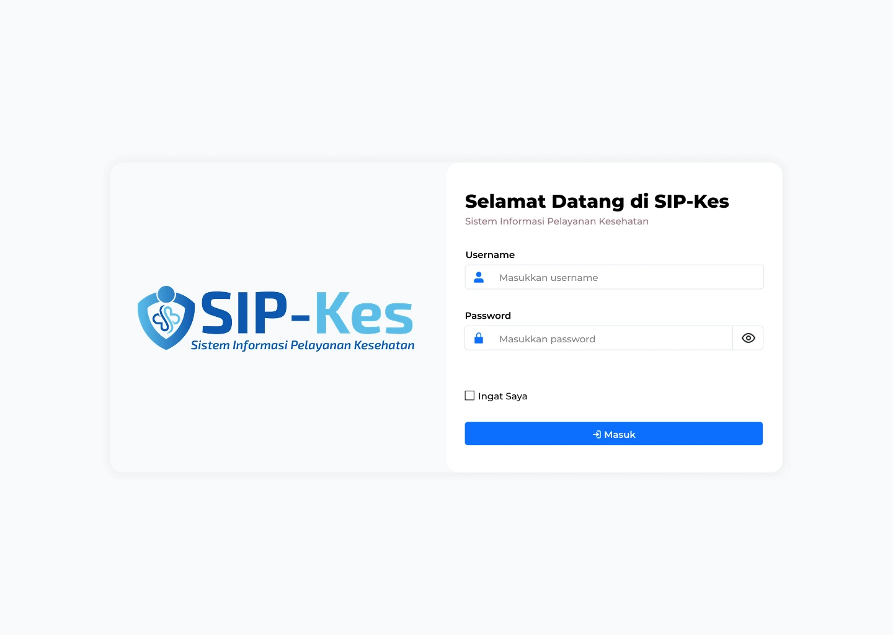
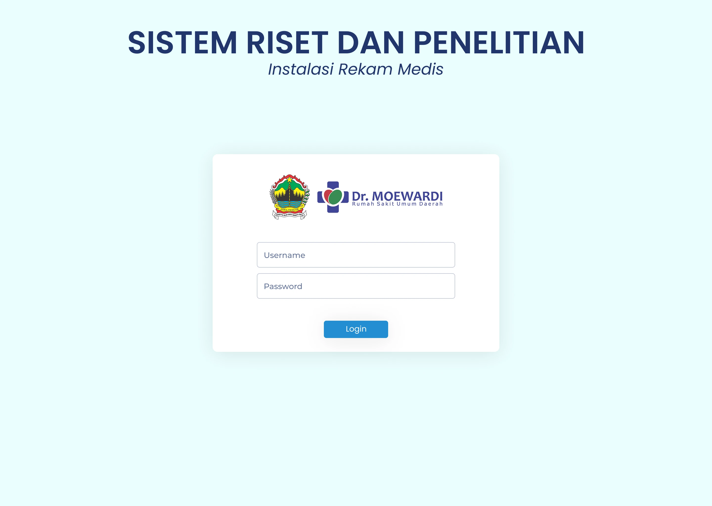
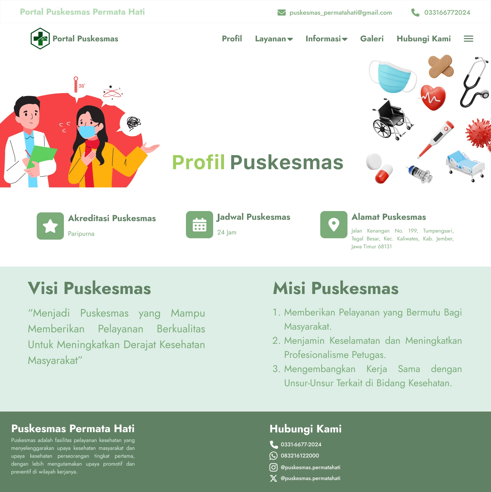
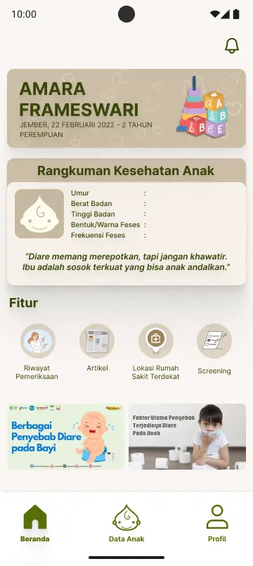
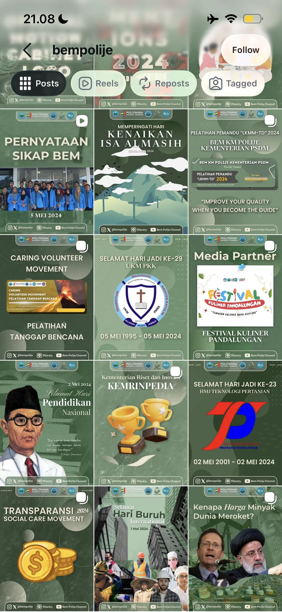
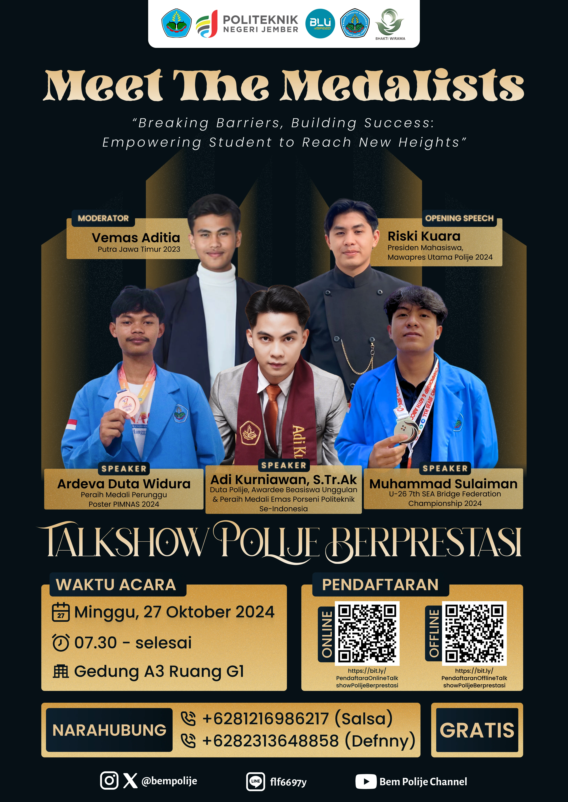
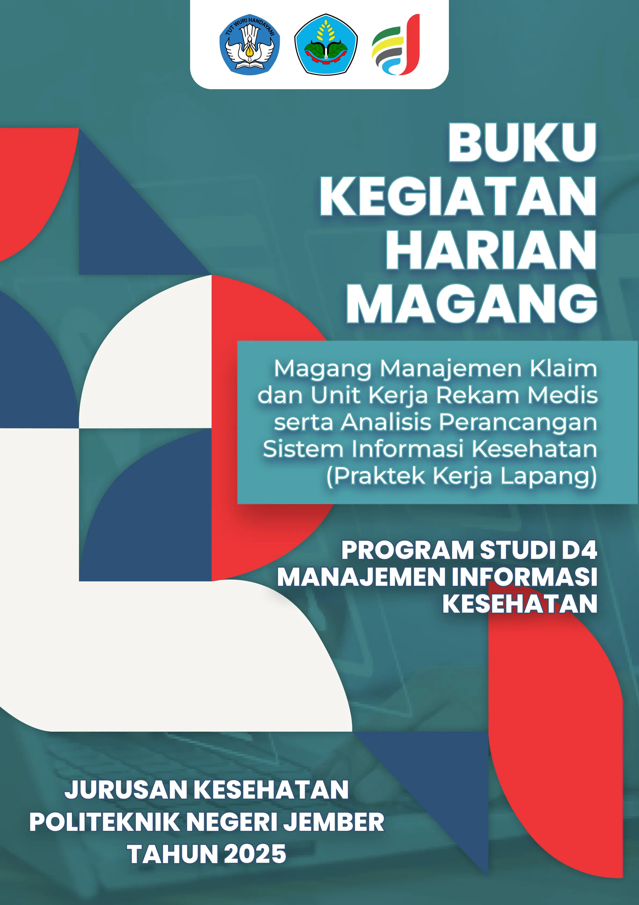
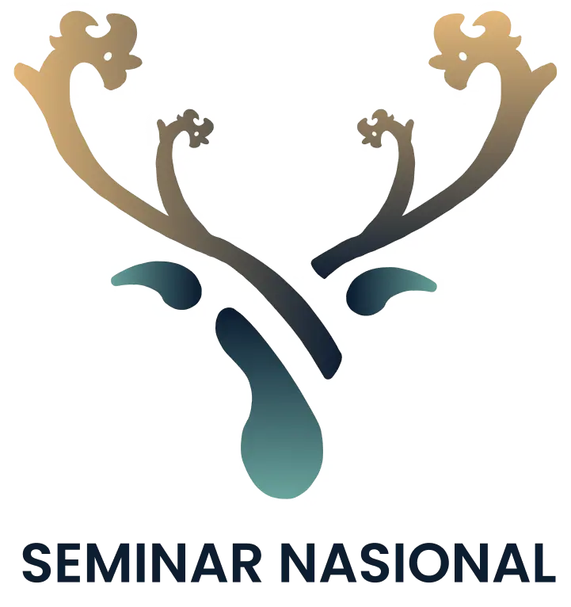
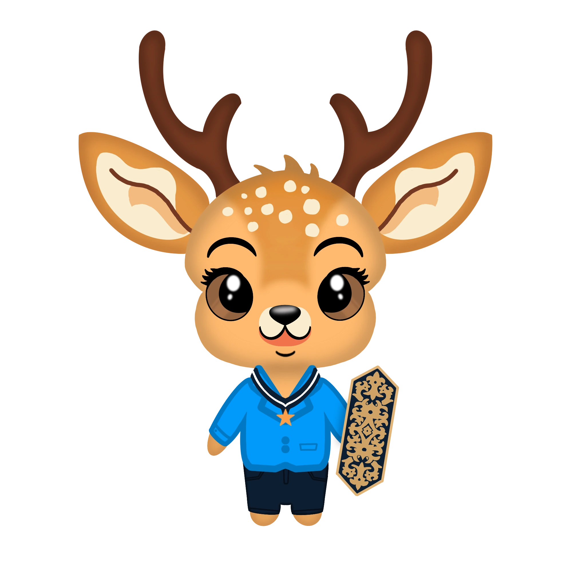
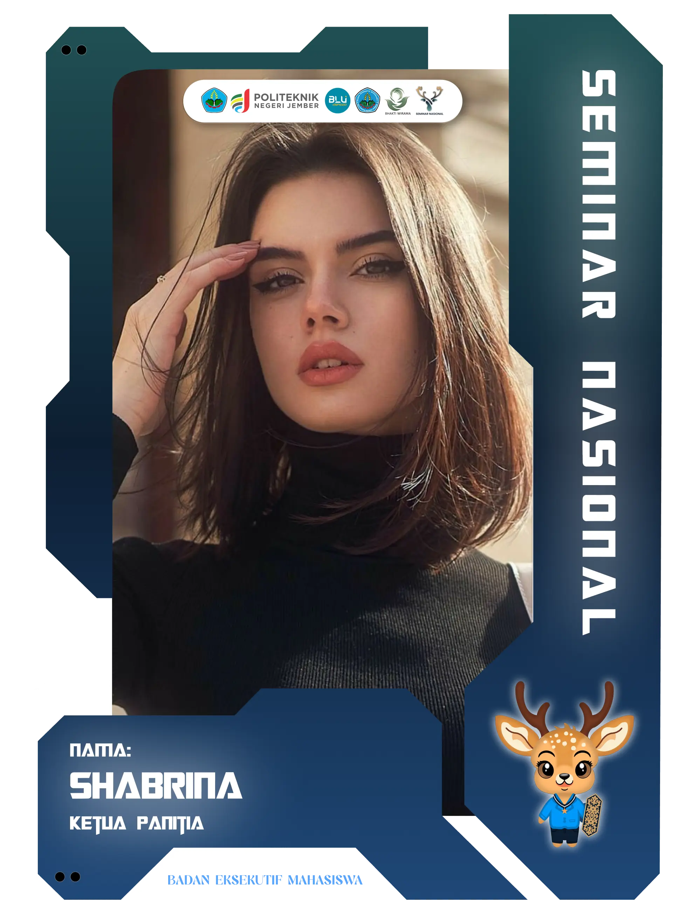

My Projects
A collection of healthcare and digital product design projects showcasing my approach to user-centered design, problem-solving, and visual communication.

Poli Gigi SIP-Kes
UI/UX case study for a dental clinic information system. Conducted user flow planning, wireframing, prototyping, and interface design to improve patient registration and queue management processes.
View Case Study →
Sistem Riset dan Penelitian RSDM
Designed a centralized research management platform for hospital staff and researchers. Focused on improving usability, reducing administrative complexity, and creating a seamless workflow.
View Case Study →
Portal Puskesmas
Designed a modern and responsive healthcare website focused on usability, visual hierarchy, and user engagement across multiple devices.
View Case Study →
BabyCare Diare
Designed a mobile health application that helps parents monitor, manage, and receive educational guidance regarding diarrhea in infants and children.
View Case Study →





